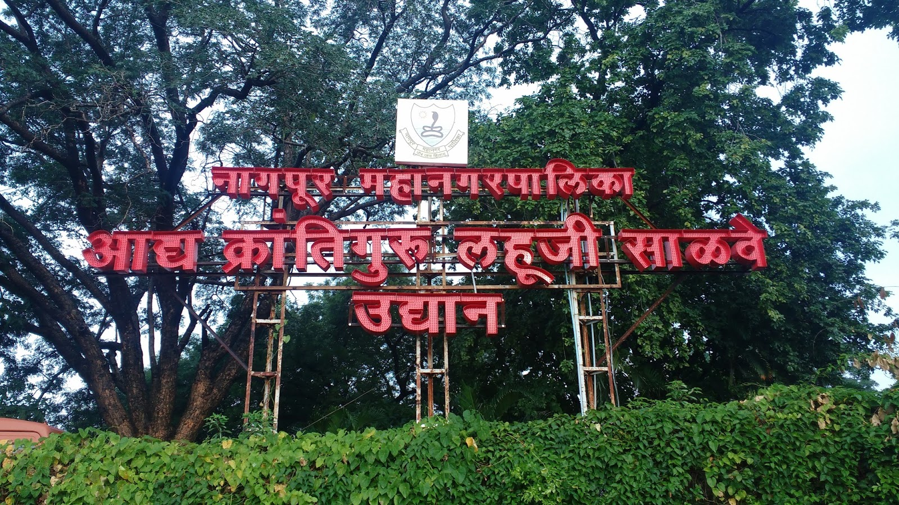
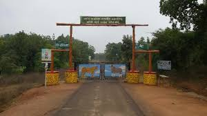
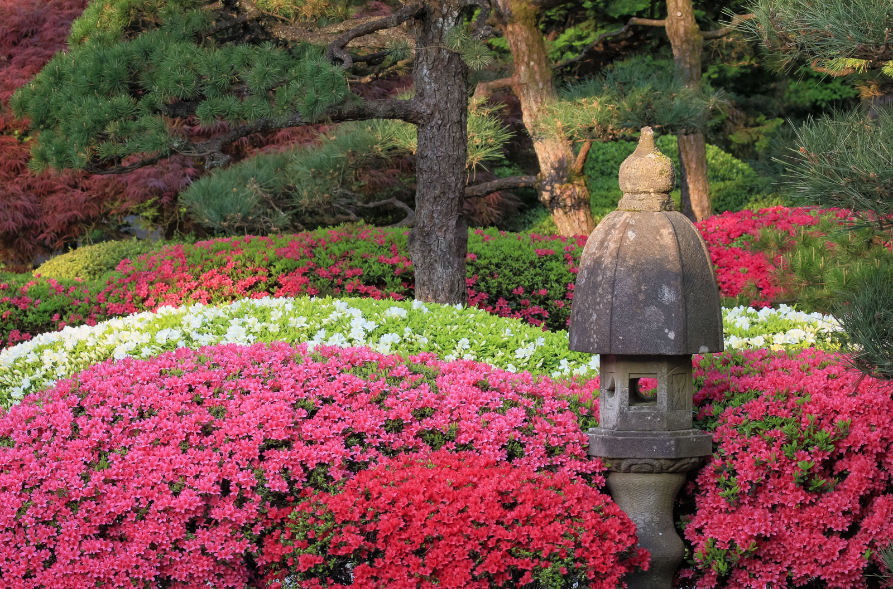
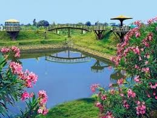
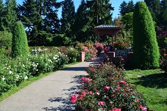
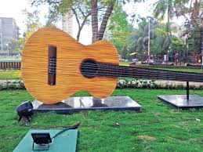
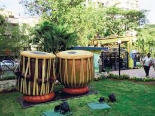
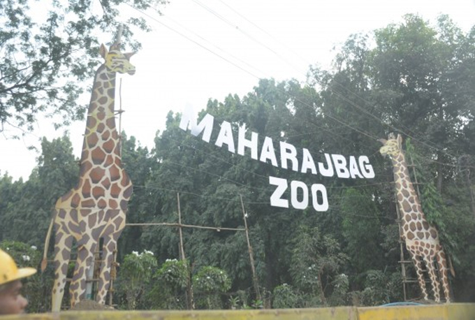
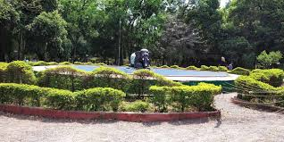
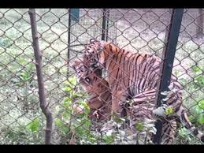

Nature And Lakes In Nagpur



Ambazari lake is situated near the Southwest border of Nagpur, in the state of Maharashtra, India. It is one of the 11 lakes in Nagpur and is the largest lake in the city. The Nag River of Nagpur originates from this lake. This was built in the year 1870, under Bhonsle rule, for supplying water to the city. Government officials and eminent people were supplied water through clay pipes. This lake is near VNIT and surrounded by mango trees, gaining the name Ambazari as "Amba" means "mango" in Marathi. The lake was used to supply water to Nagpur for over 30 years. Due to pollution, it is not currently used as a water supply.


Futala Lake is one of the lakes in Nagpur in the Indian state of Maharashtra.The lake is spread over 60 acres. Built by Bhosle kings of Nagpur, the lake is known for its coloured fountains. In the evenings the place is illuminated with halogen lights and Tanga (carriage) ride. The lake is surrounded on three sides by forest and a landscaped Chowpatty on one side.
In western area of Nagpur, ancient Futala Lake exists for 200 years. In absence of maintenance, the use of this prehistoric lake was limited to cattle washing only. It was therefore decided in the year 2003 to beautify this lake from NIT fund with equal aid from State Government.
Tanga (carriage) at Futala Lake Nagpur



Khindsi Lake is a lake near the city of Ramtek in the Nagpur district of India. Boating, watersports, restaurant and resort is operated by Rajkamal Tourism and Olive Resorts at Khindsi lake. It is Central India's largest boating center and amusement park with many tourists visiting every year.
Khindsi lake located just 5 kms from ramtek. This beautiful lake surrounded on all side by verdant forests, is a must see. Trekkingaside, the big attraction here is water sports, choose from motor boats, pedl boats, rowing boats or even water scooters there s really no better way to take in the scenic beauty of the place. The length of dam is 229 m ( 751.312 ft ) , while the height of the dam above lowest foundation is 22.2 m ( 72.83465 feet ) . Project has a Spillway of other type.Length of the spillway is 57.7 m ( 189.3045 ft ) The spillway is un-gated. It has catchment area of 21.3 thousand hectors. Maximum / Gross storage capacity is 105.13 MCM. Live storage capacity is 103 MCM. Now a days almost all the water bodies make for good picnic spots



It is known by the names Shukravari Talao (lake), Gandhi Sagar Lake and Jumma lake. It is located in Nagpur near Raman Science Center. The lake which is said to be exists for more than 275 years, was established as a source of water supply by Chand Sultan, the then ruler of Nagpur. He created the water body in the form of streams being diverted to the Nag River, which was connected to the water reservoir and named it as 'Jumma Talab'. Subsequently, it came to be known as 'Shukrawari Talao' during the Bhonsla and British periods when the first Raghuji declared Nagpur as the capital of his domain in 1742.
The picturesque rectangular shaped Gandhi Sagar reservoir is now enclosed with stonewalls and iron railings. There is a small island in the middle of the lake with Shiva temple and a garden illuminated with yellow mercury light at night. The lake also offers boating facility to the visitors.


Numerous exhibitions, fairs and political meetings, Kasturchand Park has seen it all! But very few know the history behind this historic ground of Nagpur.
Kasturchand Park: Daga family's gift to this incredible city
About a century ago, Daga family, originally hailing from Bikaner, Rajasthan moved to Nagpur. The Dagas, despite being an industrial family, were known for their philanthropy. Named after well renowned Sir Kasturchand Daga, the ground was donated for the benefit of Nagpurkars. Sir Kasturchand Daga was a successful entrepreneur who had started many industries in and around Nagpur. His wifei was the driving force behind establishing Nagpur's women only "LAD college".
What makes it special?
Over the years, Kasturchand Park's importance has increased, thanks to the political and non-political gatherings that have taken place here. Even though it is one of the biggest grounds of Nagpur, what sets it apart is the bandstand that stands right in the middle of the ground. Daga family's roots can be one of the reasons for this Rajasthani influence.


